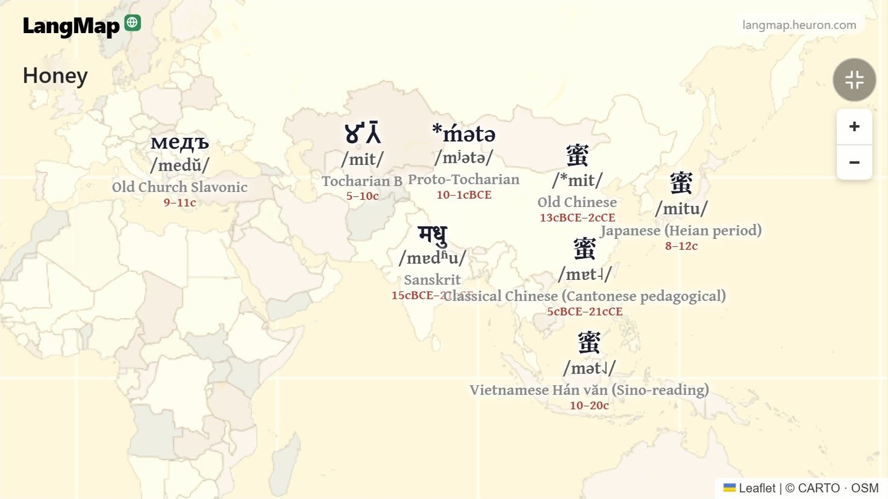

Sinosphere · · revised · Facebook post
The Chinese Word 蜜 mì May Be a Distant Relative of English "Mead"
- Proto-Indo-European seems to have had two words for honey, one behind Latin mel and one behind English mead.
- The mead word appears to have travelled east through Tocharian into Old Chinese as 蜜.
- From there 蜜 spread across the Sinosphere, while Korean kept its native word 꿀.

Contents
Two words for one bee
Proto-Indo-European appears to have had at least two words for honey.
The first:
*mélit- "honey"
Latin mel
Greek μέλι (méli)
Hittite milit
The second:
*médʰu "honey; mead"
Sanskrit मधु (madhu)
Old Church Slavonic медъ (medŭ)
Old English medu, the source of English mead
So Sanskrit madhu does not come from *mélit-. It belongs to the other word.
And English kept neither for the food itself. Honey is a Germanic word of its own, Old English huniġ. Mead survives only as the drink.
The word that went east
The second word also travelled east.
Proto-Tocharian: *ḿət(ə)
Tocharian B: mit "honey"
Tocharian was an Indo-European branch spoken in the Tarim Basin, in what is now Xinjiang. Its surviving manuscripts date roughly from the 5th to the 10th century.
So Proto-Tocharian itself is reconstructed rather than directly attested.
The usual hypothesis is that this Tocharian word entered Old Chinese:
蜜
Old Chinese *mit (Baxter–Sagart)
The Chinese–Tocharian comparison goes back to Polivanov in 1916, although the details remain debated.
A problem of dates
There is a catch in the timeline.
Old Chinese is older than the Tocharian manuscripts. A Chinese word cannot have been borrowed from a language written down centuries later.
So the lender must have been an earlier stage of Tocharian, the one reconstructed as Proto-Tocharian. Tocharian B mit is a surviving witness to the word that was lent, not the lender itself.
That is why the map carries all three stages side by side:
PIE *médʰu → Proto-Tocharian *ḿətə → Old Chinese 蜜 *mit
It is a hypothesis, not a settled fact. But it is the best current explanation for 蜜.
蜜 across the Sinosphere
From Chinese, the word spread through the classical Chinese sphere, carried along with Buddhist texts:
Mandarin: mì
Cantonese: mat6
Japanese: mitsu
Sino-Vietnamese: mật
Sino-Korean: mil
In everyday Chinese, honey is now usually a compound: Mandarin 蜂蜜 (fēngmì), "bee honey". Cantonese says 蜜糖 (mat6 tong4). Japanese has 蜂蜜 too, read hachimitsu. Vietnamese says mật ong, "bee honey" in native word order.
Korean is the exception.
Korean still commonly uses its native word 꿀 (kkul) for honey. But 蜜 survives as mil in Sino-Korean compounds.
One word, three continents
Put it all on one map:
Sanskrit madhu
Old Church Slavonic medŭ
English mead
Tocharian B mit
Chinese 蜜
One ancient word may thus connect honey words from South Asia to East Asia and Europe, through inheritance, borrowing and cultural transmission.
A drink in an English mead hall and a jar of honey in a Chinese kitchen may share one Indo-European root.